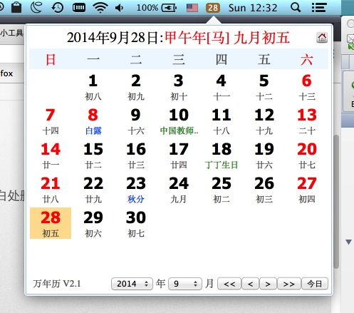

Mac下的农历状态栏小工具
Chinese Lunar Calendar for Mac Using MenuExtra
功能
在状态栏显示农历、公历的日历
可以按月或者按年的方式改变日期，也可以快速回到当前日期
可改变位置，使用CMD+Drag的方式移动位置，或者拖至桌面空白处删除本工具
安装后会自动随机启动
开源，你可以根据自己的需要对软件做进一步的修改
日历界面

建议使用方法
- 调整Mac的时钟设置，在状态栏中隐藏日期信息

- 将本程序的图表拖至Mac时钟的左侧
声明
- #include <disclaimer.h>
- 如商用，须征得本人同意